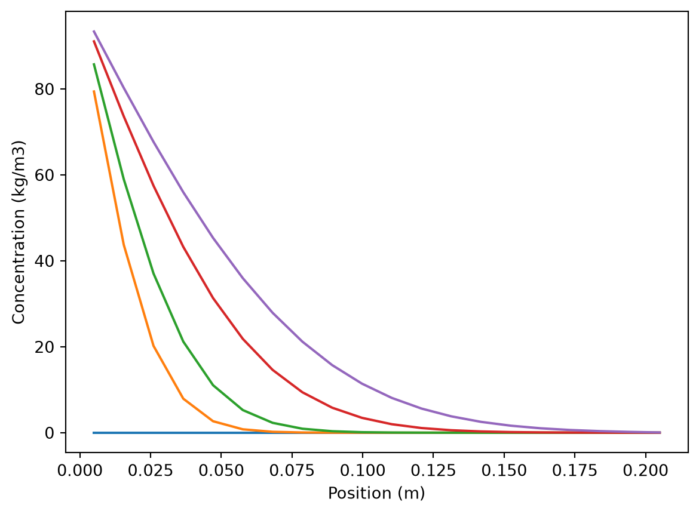

"""
Author: Sasha D. Hafner
Course: Modelling 2026
Description:
This module defines numerical models for 1D diffusion of a solute
through a column or semi-infinite slab.
Usage:
See the code block below for a demo.
"""
import numpy as np
from scipy.integrate import solve_ivp
def diff1D(L,
n,
D,
bc,
ci,
t_eval
):
"""
A 1D diffusion model for rectangular geometry with flow through both boundaries.
Parameters
----------
L : float
Total column, layer, material, etc. length or thickness (m)
n : integer
Number of spatial layers/cells/nodes '
D : float
Diffusivity (m2/s)
bc : list or tuple
Boundary conditions, fixed concentrations (kg/m3), bc[0] = left or bottom, bc[1] = right or top
ci : float
Initial concentration (single value -> uniform or flat profile)
t_eval : list, tuple, or array
Times for model evaluation (s)
Returns
-------
dictionary
With time (t, s), cell width (dx, m), cell center position
(x, m), concentration profile (c, kg/m3), and cumulative
mass transfer at left and right boundaries per m2 of end or
cross-sectional area (ml, mr, kg/m2).
"""
# Define rates function
def rates(t, c):
# Extract the cell concentrations (remove the two values of cumulative mass transfer)
c = c[:-2]
# Extend concentration array with the boundary condition values to make calculations easier
ca = np.insert(c, 0, bc[0])
ca = np.append(ca, bc[1])
## Get second differences (our approximation of second derivatives) with central difference method
#der2 = (ca[2:] - 2 * ca[1:-1] + ca[:-2]) / dxi[1:-1]**2
## Then rate of concentration change in kg/m3-s
#dcdt = D * der2
# Or calculate in steps
# Flux at all interfaces between cells
j = -D * (ca[1:] - ca[:-1]) / dxi
# Derivative
dcdt = (j[:-1] - j[1:]) / dx
# Extract flux at first and last cell (i.e., at the boundaries)
# Positive is right for both
# kg/m2-s
jbound = j[[0, -1]]
# And combine it with the derivative vector at the end to track cumlative transfer in and out
der = np.append(dcdt, jbound)
# Return derivatives, all kg/m2-s
return(der)
# Extract some inputs
t_max = max(t_eval)
t_span = (0, t_max)
# Initial state variable vector
si = np.repeat(ci, n + 2)
# Last positions are mass loss, always with starting value of 0
si[-2:] = 0
# Cell width (m)
dx = L / n
# This is a cell-based approach, so our boundary dx values are half as large as the others
dxi = np.full(n + 1, dx)
dxi[[0, -1]] = dx / 2
# Solve with ODE solver
res = solve_ivp(rates, t_span, si, t_eval = t_eval)
# Add x positions based on cell centers
x = np.linspace(0, L, n) + dx / 2
# Organize results in a dictionary
out = {
"t": res.t,
"dx": L/n,
"x": x,
"c": res.y[:-2],
"ml": res.y[-2],
"mr": res.y[-1]
}
return(out)Model validation
In this exercise you will work with a 1D diffusion model. You will get some practice with model validation.
The conceptual model is quite simple. We have a column with some solute (NaCl for example, which is what was used in the measurements) diffusing from one end to the other through water. We can represent the conceptual model with text symbols:
--------------------------
| |
c_l | | c_r
bc[0] | | bc[0]
| |
--------------------------
x -->The Python model is defined in the code block below.
See the data file col_salt.csv for some (fabricated) measurements of the total salt (NaCl here) mass within a 0.1 m long column with a diameter of 0.02 m. Fixed salt concentrations at the boundaries were 36 kg/m3 at the left and zero at the right. Use the measurements to validate the model graphically and with relevant model fit statistics. The diffusivity of NaCl in water is known to be around 1.6E-9 m2/s. What do you think about the accuracy of the model? Hint: Be careful with units and variables. You have to convert model predictions to the variable that was measured.
And here is a demo.
"""
Author: Sasha D. Hafner
Class: Modelling 2025
Description:
Demo of a 1D diffusion model.
"""
# Packages
import numpy as np
import matplotlib.pyplot as plt
from importlib import reload
# Predictions for a 0.2 m column with 20 layers and a diffusivity of 2E-9 m2/s
# 100 kg/m3 salt on left side, none on right
# Over 10 days
pred = diff1D(
L = 0.2,
n = 20,
D = 2.1E-9,
bc = [100, 0],
ci = 0,
t_eval = np.linspace(0, 10 * 86400, 10)
)View output.
pred{'t': array([ 0., 96000., 192000., 288000., 384000., 480000., 576000.,
672000., 768000., 864000.]),
'dx': 0.01,
'x': array([0.005 , 0.01552632, 0.02605263, 0.03657895, 0.04710526,
0.05763158, 0.06815789, 0.07868421, 0.08921053, 0.09973684,
0.11026316, 0.12078947, 0.13131579, 0.14184211, 0.15236842,
0.16289474, 0.17342105, 0.18394737, 0.19447368, 0.205 ]),
'c': array([[0.00000000e+00, 7.93934553e+01, 8.57053567e+01, 8.83741569e+01,
8.99964717e+01, 9.10570200e+01, 9.18475481e+01, 9.24543439e+01,
9.29496000e+01, 9.33532683e+01],
[0.00000000e+00, 4.37439392e+01, 5.89880841e+01, 6.62207193e+01,
7.05800444e+01, 7.36247860e+01, 7.58774752e+01, 7.76422365e+01,
7.90626461e+01, 8.02480425e+01],
[0.00000000e+00, 2.02037270e+01, 3.70417052e+01, 4.66545763e+01,
5.29763902e+01, 5.74686393e+01, 6.08924525e+01, 6.36011062e+01,
6.58225682e+01, 6.76770424e+01],
[0.00000000e+00, 7.91208216e+00, 2.11961597e+01, 3.09367458e+01,
3.79343550e+01, 4.32412485e+01, 4.74008343e+01, 5.07778593e+01,
5.35781204e+01, 5.59571716e+01],
[0.00000000e+00, 2.66543963e+00, 1.10483233e+01, 1.92070559e+01,
2.59157343e+01, 3.13204735e+01, 3.57608765e+01, 3.94643056e+01,
4.26147540e+01, 4.53244638e+01],
[0.00000000e+00, 7.83307461e-01, 5.26163515e+00, 1.12085050e+01,
1.68474910e+01, 2.18223860e+01, 2.61197511e+01, 2.98459643e+01,
3.30905204e+01, 3.59480592e+01],
[0.00000000e+00, 2.03439711e-01, 2.29525482e+00, 6.12169842e+00,
1.04393193e+01, 1.46141318e+01, 1.84636096e+01, 2.19423710e+01,
2.50785634e+01, 2.78999286e+01],
[0.00000000e+00, 4.72410669e-02, 9.21192094e-01, 3.14771315e+00,
6.15008863e+00, 9.40555482e+00, 1.26216484e+01, 1.56822048e+01,
1.85363618e+01, 2.11841817e+01],
[0.00000000e+00, 9.90818627e-03, 3.41236461e-01, 1.51776769e+00,
3.45593143e+00, 5.81532877e+00, 8.34482874e+00, 1.08860241e+01,
1.33624593e+01, 1.57277646e+01],
[0.00000000e+00, 1.89308645e-03, 1.17198459e-01, 6.91170996e-01,
1.84681058e+00, 3.45535102e+00, 5.33278837e+00, 7.34272238e+00,
9.38809114e+00, 1.14170289e+01],
[0.00000000e+00, 3.31835099e-04, 3.74474635e-02, 2.96050251e-01,
9.43162024e-01, 1.97286301e+00, 3.29588202e+00, 4.80816351e+00,
6.43064034e+00, 8.09953167e+00],
[0.00000000e+00, 5.36504456e-05, 1.11801215e-02, 1.20213564e-01,
4.58401474e-01, 1.08316535e+00, 1.96880591e+00, 3.05924354e+00,
4.29121269e+00, 5.61633456e+00],
[0.00000000e+00, 8.03405142e-06, 3.12843436e-03, 4.60741791e-02,
2.13516023e-01, 5.71887601e-01, 1.13789292e+00, 1.88928164e+00,
2.79167451e+00, 3.80453042e+00],
[0.00000000e+00, 1.11804521e-06, 8.23725078e-04, 1.68076402e-02,
9.47209522e-02, 2.90647840e-01, 6.35781857e-01, 1.13401144e+00,
1.76866856e+00, 2.51821999e+00],
[0.00000000e+00, 1.45031408e-07, 2.04578822e-04, 5.80844535e-03,
4.04140255e-02, 1.42201587e-01, 3.43957941e-01, 6.60510394e-01,
1.09222157e+00, 1.62682824e+00],
[0.00000000e+00, 1.75889827e-08, 4.80633982e-05, 1.91804550e-03,
1.64287835e-02, 6.70455706e-02, 1.79875128e-01, 3.73831417e-01,
6.55714287e-01, 1.02455048e+00],
[0.00000000e+00, 2.00121951e-09, 1.06988602e-05, 6.02127546e-04,
6.44886413e-03, 3.04380644e-02, 9.09885889e-02, 2.04529204e-01,
3.81759095e-01, 6.24887357e-01],
[0.00000000e+00, 2.14426097e-10, 2.26027066e-06, 1.81067846e-04,
2.40294419e-03, 1.32451506e-02, 4.40062517e-02, 1.07124765e-01,
2.11571076e-01, 3.62429919e-01],
[0.00000000e+00, 2.17372954e-11, 4.51056970e-07, 5.10929476e-05,
8.43854335e-04, 5.31354665e-03, 1.94423742e-02, 5.04806099e-02,
1.04933188e-01, 1.86036748e-01],
[0.00000000e+00, 1.90953402e-12, 7.09050556e-08, 1.05815893e-05,
2.00568210e-04, 1.40130082e-03, 5.42938188e-03, 1.47729392e-02,
3.14081576e-02, 5.70889206e-02]]),
'ml': array([0. , 1.54964828, 2.22968992, 2.74567837, 3.17919475,
3.56006072, 3.90399268, 4.2199497 , 4.51387805, 4.78977008]),
'mr': array([0.00000000e+00, 4.32842752e-15, 3.79872849e-10, 1.01416083e-07,
2.99309109e-06, 2.94324820e-05, 1.53924318e-04, 5.38823683e-04,
1.44316749e-03, 3.19618006e-03])}Tip: It can be easier to understand and view output if you reduce the number of layers/cells to e.g., 5. You could also reduce the number of times. But while exploring the model function it is helpful if the two (times, cells) do not have the same length (do you see why?).
Concentrations (kg/m3) for all positions and times (2D array).
pred['c']array([[0.00000000e+00, 7.93934553e+01, 8.57053567e+01, 8.83741569e+01,
8.99964717e+01, 9.10570200e+01, 9.18475481e+01, 9.24543439e+01,
9.29496000e+01, 9.33532683e+01],
[0.00000000e+00, 4.37439392e+01, 5.89880841e+01, 6.62207193e+01,
7.05800444e+01, 7.36247860e+01, 7.58774752e+01, 7.76422365e+01,
7.90626461e+01, 8.02480425e+01],
[0.00000000e+00, 2.02037270e+01, 3.70417052e+01, 4.66545763e+01,
5.29763902e+01, 5.74686393e+01, 6.08924525e+01, 6.36011062e+01,
6.58225682e+01, 6.76770424e+01],
[0.00000000e+00, 7.91208216e+00, 2.11961597e+01, 3.09367458e+01,
3.79343550e+01, 4.32412485e+01, 4.74008343e+01, 5.07778593e+01,
5.35781204e+01, 5.59571716e+01],
[0.00000000e+00, 2.66543963e+00, 1.10483233e+01, 1.92070559e+01,
2.59157343e+01, 3.13204735e+01, 3.57608765e+01, 3.94643056e+01,
4.26147540e+01, 4.53244638e+01],
[0.00000000e+00, 7.83307461e-01, 5.26163515e+00, 1.12085050e+01,
1.68474910e+01, 2.18223860e+01, 2.61197511e+01, 2.98459643e+01,
3.30905204e+01, 3.59480592e+01],
[0.00000000e+00, 2.03439711e-01, 2.29525482e+00, 6.12169842e+00,
1.04393193e+01, 1.46141318e+01, 1.84636096e+01, 2.19423710e+01,
2.50785634e+01, 2.78999286e+01],
[0.00000000e+00, 4.72410669e-02, 9.21192094e-01, 3.14771315e+00,
6.15008863e+00, 9.40555482e+00, 1.26216484e+01, 1.56822048e+01,
1.85363618e+01, 2.11841817e+01],
[0.00000000e+00, 9.90818627e-03, 3.41236461e-01, 1.51776769e+00,
3.45593143e+00, 5.81532877e+00, 8.34482874e+00, 1.08860241e+01,
1.33624593e+01, 1.57277646e+01],
[0.00000000e+00, 1.89308645e-03, 1.17198459e-01, 6.91170996e-01,
1.84681058e+00, 3.45535102e+00, 5.33278837e+00, 7.34272238e+00,
9.38809114e+00, 1.14170289e+01],
[0.00000000e+00, 3.31835099e-04, 3.74474635e-02, 2.96050251e-01,
9.43162024e-01, 1.97286301e+00, 3.29588202e+00, 4.80816351e+00,
6.43064034e+00, 8.09953167e+00],
[0.00000000e+00, 5.36504456e-05, 1.11801215e-02, 1.20213564e-01,
4.58401474e-01, 1.08316535e+00, 1.96880591e+00, 3.05924354e+00,
4.29121269e+00, 5.61633456e+00],
[0.00000000e+00, 8.03405142e-06, 3.12843436e-03, 4.60741791e-02,
2.13516023e-01, 5.71887601e-01, 1.13789292e+00, 1.88928164e+00,
2.79167451e+00, 3.80453042e+00],
[0.00000000e+00, 1.11804521e-06, 8.23725078e-04, 1.68076402e-02,
9.47209522e-02, 2.90647840e-01, 6.35781857e-01, 1.13401144e+00,
1.76866856e+00, 2.51821999e+00],
[0.00000000e+00, 1.45031408e-07, 2.04578822e-04, 5.80844535e-03,
4.04140255e-02, 1.42201587e-01, 3.43957941e-01, 6.60510394e-01,
1.09222157e+00, 1.62682824e+00],
[0.00000000e+00, 1.75889827e-08, 4.80633982e-05, 1.91804550e-03,
1.64287835e-02, 6.70455706e-02, 1.79875128e-01, 3.73831417e-01,
6.55714287e-01, 1.02455048e+00],
[0.00000000e+00, 2.00121951e-09, 1.06988602e-05, 6.02127546e-04,
6.44886413e-03, 3.04380644e-02, 9.09885889e-02, 2.04529204e-01,
3.81759095e-01, 6.24887357e-01],
[0.00000000e+00, 2.14426097e-10, 2.26027066e-06, 1.81067846e-04,
2.40294419e-03, 1.32451506e-02, 4.40062517e-02, 1.07124765e-01,
2.11571076e-01, 3.62429919e-01],
[0.00000000e+00, 2.17372954e-11, 4.51056970e-07, 5.10929476e-05,
8.43854335e-04, 5.31354665e-03, 1.94423742e-02, 5.04806099e-02,
1.04933188e-01, 1.86036748e-01],
[0.00000000e+00, 1.90953402e-12, 7.09050556e-08, 1.05815893e-05,
2.00568210e-04, 1.40130082e-03, 5.42938188e-03, 1.47729392e-02,
3.14081576e-02, 5.70889206e-02]])All positions, for final time only.
pred['c'][:, -1]array([9.33532683e+01, 8.02480425e+01, 6.76770424e+01, 5.59571716e+01,
4.53244638e+01, 3.59480592e+01, 2.78999286e+01, 2.11841817e+01,
1.57277646e+01, 1.14170289e+01, 8.09953167e+00, 5.61633456e+00,
3.80453042e+00, 2.51821999e+00, 1.62682824e+00, 1.02455048e+00,
6.24887357e-01, 3.62429919e-01, 1.86036748e-01, 5.70889206e-02])Middle (nearly) layer, all times.
pred['c'][10, :]array([0.00000000e+00, 3.31835099e-04, 3.74474635e-02, 2.96050251e-01,
9.43162024e-01, 1.97286301e+00, 3.29588202e+00, 4.80816351e+00,
6.43064034e+00, 8.09953167e+00])The layer thickness (m) is returned as well.
pred['dx']0.01And here are some output variables for verification–cumulative mass transfer at the left and right boundaried (kg/m2).
pred['ml']array([0. , 1.54964828, 2.22968992, 2.74567837, 3.17919475,
3.56006072, 3.90399268, 4.2199497 , 4.51387805, 4.78977008])pred['mr']array([0.00000000e+00, 4.32842752e-15, 3.79872849e-10, 1.01416083e-07,
2.99309109e-06, 2.94324820e-05, 1.53924318e-04, 5.38823683e-04,
1.44316749e-03, 3.19618006e-03])Here are profiles for different times.
plt.close()
plt.plot(pred['x'], pred['c'][:, 0])
plt.plot(pred['x'], pred['c'][:, 1])
plt.plot(pred['x'], pred['c'][:, 2])
plt.plot(pred['x'], pred['c'][:, 5])
plt.plot(pred['x'], pred['c'][:, 9])
plt.xlabel('Position (m)')
plt.ylabel('Concentration (kg/m3)')